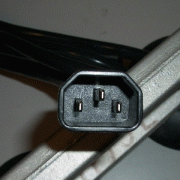
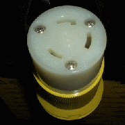
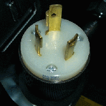
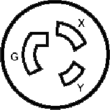
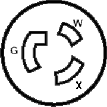
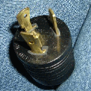

Search within the PSG pages:
Hello World! Welcome to the Pocket Survival Guide :) This is my collection of notes that I have collected over the years as a Sys Admin. I am sharing them here hoping that they will be useful to you. These are concise notes to refresh your mind on how to do certain things, maybe you know what need to be done on one platform but don't know the commands on another. Or maybe just pointers for you to read up the relevan man pages or know what to google for :) Some pages are really random notes to myself. They are all work in progress, as if they are stuck in an infinite loop... Some of the more salient pages are:
- Docker
- NixOS
- CoreOS
- BigData
- LDAP: There was a lack of good sys admin book on the topic of implementing/deploying LDAP. I almost tried to write one. But I changed job soon after I completed the project, so this html has become the book's gravestone.
- RFC 007 - MRF My current work is on an algorithm I am calling MRF - Modified Raid Five. I had long ago thought of applying RAID 5 to tape drives. But recently I learned that large scale archiving operations may actually benefit from this superficially paradoxical approach.
- Funny 404
|
|
NEW I am learning mobile development. With that, the Pocket part of PSG can really become true! :). It is a phonegap/cordova app containing all the PSG pages.
|
Thanks for those who have send kind and encouraging words to me, it is nice to know that these notes are actually useful for someone other than myself!
And special thanks to those who send me notes about mistakes, some pretty bad ones that could have caused someone to loose his/her job! So, be warned, check the man pages etc when doing something that could have dramatic negative impact (unexporting file system, shrinking volume, etc)!
Apologies for those of you who are trying to bookmark this site. I started this long time ago. While once in a blue moon I try to write a blog (Geek Yap), I don't feel like that's the right interface is my ever evolving/updating admin notes. WordPress with the Annotum Base theme would fit the bill, but it doesn't take HTML pages, and I am too lazy to convert the contents. With that, I am hosting PSG on dropbox now. This URL shortener would be good to bookmark: http://tiny.cc/tin6150/
At one point I was taking some Internet Development classes to catch up to the ever changing field. So this PSG site has also become my playground. Part of the page looks wacky because the homeworks required demonstration of some constructs. I have left them in place to remind myself how to do them. Sorry if they are eye sores... But to compensate, I have sprinkled many of the pages with Randall Munroe's XKCD comics. Hope you like them. Some of my notes are not easily displayable in html, please see robot.txt, unix script rosetta, (jquery example tba). The older front page is at psg1.html.
Plugs Galore
I need a what to power my new server? Here is brief help. For a more extensive guide, please see the plug page
| Receptacle (wall outlet) | Plug (on cable) | ||
|---|---|---|---|
|
All the NEMA twist lock presented have essentially the same shape. Their main difference is the diameter of circle,
with L5-20 having the smallest diameter, L6-20 being in the middle, and L6-30 is the largest. In IEC scheme, odd numbers are receptors, even are plugs (the ones with the pin out). In a politically incorrect mnemonics, females are odd, males are even. |
|||
| IEC C19/C20 (220V) | |||
| IEC C13/C14 (110V/220V) | 

|
||
| NEMA L6-30 (220V-30A) |  |  | |
| NEMA L6-20 (220V-20A) |  | ||
| NEMA L5-20 (110V-20A) |  |  | |
Sys admins are wacky bunch, hard to please. But here are my favorite providers and web sites:
comments powered by Disqus (and disqus comment count): link w/ disqus count
About me
I have been "hacking" computers for 10+ years now. I started liking to fiddle with OS since college days in FIU, and it is still a hobby when I am not hiking or biking or studying for biotech :-)
This page has links to my other social media profiles.
Drop me a line at G+ or reward me by using this link to get your own dropbox account (we'll both get an extra 500MB of free storage).
Copyright info about this work
This work is licensed under a Creative Commons Attribution-NonCommercial-ShareAlike2.5 License.
Pocket Sys Admin Survival Guide: for content that I wrote, (CC)
some rights reserved.
2005,2017 Tin Ho [ tin6150 (at) gmail.com ]
Some contents are cached here for easy reference. Sources include man pages,
vendor documents, online references, discussion groups, etc. Copyright of those
are obviously those of the vendor and original authors. I am merely caching them here for quick reference and avoid broken URL problems.
Where is PSG hosted these days?
-
https://tin6150.gitlab.io/psg/
GitLab is the new and master home starting 2020.1025
-
tiny.cc/tin6150
=
https://tin6150.github.io/psg/
GitHub is the new and master home starting 2016.10
-
tiny.cc/TIN6150
=
http://psg.skinforum.org/
Arvixe mirror, automatically updated from github repo
-
ask-margo.com
=
http://psg.ask-margo.com.s3-website-us-west-1.amazonaws.com/
Amazon S3 mirror site, updated at random interval.
-
tiny.cc/TIN
=
http://tin6150.s3-website-us-west-1.amazonaws.com/
Amazon S3 mirror site 2, may shut it down as don't need it
-
http://tiny.cc/tin6150a
=
http://grumpyxmas.medianewsonline.com/
Freebie mirror at medianewsonline. last updated Dec 2012